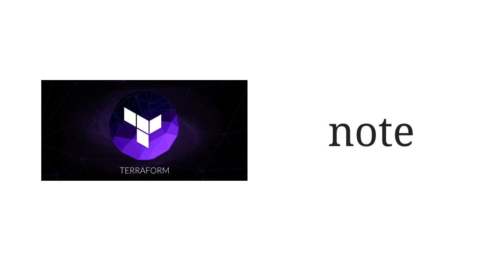

最近在鼓搗 Terraform，遇到了幾個 Terraform 還沒有解決的問題，在此一併跟使用上的小技巧一起記錄下來，希望可以幫助到也想要嘗試看看 Terraform 的同好。
這篇不會包含 Terraform 的 Getting Started，請移駕 Terraform 官網。通常我會建議初學者將 Terraform 實際應用到 AWS 上。
- 首先 AWS 非常便宜。如果我沒記錯的話不滿一小時的時間會被加總，加總後不滿一小時以一小時計，例如開 3 次每次 10 分鐘，月底計費的時候就會加總成 30 分鐘，只收一個小時的錢。
- 再來 Terraform 也可以很方便地 destroy 掉任何 Terraform 留下的痕跡，當然已經建立的 EC2 instance 等 resource 也不會受到 Terraform 的操作影響。
分清楚 variable, data, resource, output
variable是 Terraform 或module的輸入，例如 IP 位址、SSH 金鑰的路徑等都可以使用variable輸入，引用時必須在名稱前面加上var作為前綴字，例如${var.this_is_a_variable}。data最常跟resource混淆。data可以想像成是 Terraform 的搜尋引擎，主要用來 search 或 filter provider 上既有的資料。以 AWS 為例，Terraform 就提供aws_iamdata 來搜尋公開的 AMI。使用data必須加上data作為前綴字，例如${data.filtered_amis.latest}。resource就是 provider 提供給使用者自己掌握的資源。以 AWS 為例，EC2 instance、S3 bucket、VPC Subnet 甚至是 VPC Security Group 都會被抽象化成 Terraform 的 resource，讓我們可以以 Terraform 的語法統一管理。output是 Terraform 或module的輸出，例如透過 Terraform 建立的 resource 的公開 IP 位址。以 AWS 為例，諸如 EC2 instance 的 public DNS、到 Cloudfront 的 hosted zone，都可以透過output輸出到 Terraform 之外或是給其他module使用。- 在 Terraform，
resource建立之後產生的資料稱為 Attribute，attribute 可以做為output的值，或是給同一個module底下的resource使用。例如aws_instance這個 resource，就提供public_dns這個 attribute，值是該 EC2 instance 的 public DNS。
善用 import
如果像我一樣，在使用 Terraform 之前就已經有手動透過 awscli 或 AWS console 建立過 resource，例如 EC2 instance、VPC、IAM policy 等，可以妥善地運用 terraform import 將已經建立過的 resource 匯入 Terraform。
當然，首先我們必須找出要匯入的是什麼 resource，例如 aws_instance，那麼我們可以到 Terraform 的官網，找 aws_instance 的文件，最底下會有一個 Import 的章節，就會告訴我們要怎麼樣匯入這個 resource。只要是 AWS 的 resource，都會有一個獨一無二的 identifier，有可能是我們自己定義的名稱，例如 EC2 使用的 Key pair；也有可能是十六進位的數字，例如 EC2 instance，所以需要查閱 Terraform 的文件才會知道。
舉 EC2 instance 為例，假設 EC2 instance 的 identifier 是 i-1a2b3c4d，那麼使用 Terraform 匯入的時候，語法就會像是以下這個樣子：
1 | $ terraform import aws_instance.foobar i-1a2b3c4d |
其中 aws_instance.foobar 是 Terraform 的 module path。
如果是 Terraform 自己定義的 resource，就不會實際地反應在 cloud provider 上
例如 aws_iam_user_policy_attachment 就是 Terraform 自己定義的 resource，無法匯入。但如果 terraform apply，如果該 IAM policy 已經 attach 到 IAM user 身上，就不會再被重複地 attach。不過 Terraform 還是會在 terraform.tfstate 檔案裡紀錄這件事情已經做過了，方便之後移除該 resource 時，將 policy 從 user 身上 detach 掉。
Terraform 不支援變數內嵌變數
假設今天有一個 foo variable：
1 | # modules/foo/main.tf |
如果在 modules/foo/another.tf 使用 ${var.foo[var.bar_key]}，Terraform 會解析錯誤，必須改成把 var.foo 展開：
1 | # modules/foo/main.tf |
然後使用 ${var.foo["bar_key"]} 與 ${var.foo["bar_key"]} 去取值。
Terraform 的 -force 有 bug
-force flag on terraform remote push does not work #5663
必須手動增加 .tfstate 檔案的 serial 欄位。
Terraform 支援 module 內嵌 module，但回傳的 resource name 不正確
terraform import command fails when there are several nested levels on the resource address #8713
例如 terraform plan 時顯示的是：
1 | module.foo.policy-with-module.aws_iam_policy.inner-policy |
其中 policy-with-resource 是一個 module。如果在 terraform import 時，原封不動地使用這個名稱，Terraform 會回報解析錯誤，必須在 policy-with-resource 前面加上 module，也就是變成：
1 | module.foo.module.policy-with-module.aws_iam_policy.inner-policy |
才行得通。